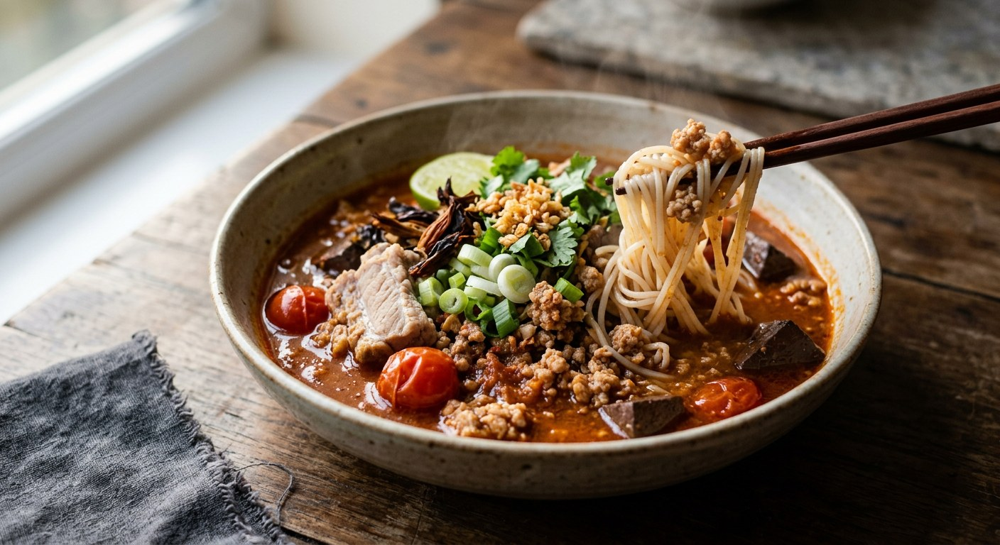

Fermented rice noodles under the north's tomato-and-pork curry — dried chillies and thua nao pounded to a paste, ngiao flowers softening in the broth.

น้ำเงี้ยว is the one northern curry that isn't a curry in the coconut sense — no coconut milk, no coconut cream, just a pounded paste of dried chillies, shallots, garlic, shrimp paste and grilled thua nao (the northern fermented soybean disc), fried in oil and loosened into a bone broth with tomatoes. Its signature comes from the ngiao flower — the dried stamens of the red silk-cotton tree — which stew into the soup and give it the name.
Kapook's framing is the shortest way to understand it: nam ngiao is nam phrik ong transformed — the same tomato-and-pork paste of the north, but stretched into a noodle soup with pork ribs and blood. The Chiang Rai version (via the Mae Noi curry-paste shop) goes further: a stronger, rougher broth, not clear like a plain soup, and served over khanom jeen or rice noodles, since Chiang Rai never limited it to one noodle.
The one step every Thai source treats as sacred is the paste-fry. Whether the paste is pounded fresh or spooned from a jar, it must be fried in oil until fragrant before it meets the broth — Mae Noi even warns that if you substitute nam phrik ong for ready-made paste, you fry it first, over a gentle fire, until the colour and smell tell you it's done.
| Thai | English | Amount |
|---|---|---|
| ขนมจีน | Khanom jeen noodles | 300 g |
| หมูบด | Minced pork | 300 g |
| ซี่โครงหมู | Pork ribs | 300 g |
| เลือดหมูต้ม | Boiled pork blood | 1 cube |
| มะเขือเทศลูกเล็ก | Cherry tomatoes | 2 cups |
| ดอกงิ้วแห้งแช่น้ำข้ามคืน | Dried ngiao flowers, soaked overnight | a handful |
| น้ำมันพืช | Vegetable oil | 3 tbsp |
| พริกแดงแห้ง | Dried red chillies | ½ cup |
| รากผักชี | Coriander roots | 3–4 |
| กระเทียม | Garlic | 10 cloves |
| หอมแดง | Shallots | 7 |
| ลูกผักชี | Coriander seed | 1 tsp |
| กะปิ | Shrimp paste | 1 tbsp |
| เกลือ | Salt | 1 tbsp |
| ตะไคร้ | Lemongrass | 3 tbsp |
| ถั่วเน่าย่าง | Grilled thua nao | 2 sheets |
| เต้าเจี้ยว | Tao jiao | 2 tbsp |
| น้ำปลา | Fish sauce | 4 tbsp |
The batch version (Cookpad): 2 kg noodles, 1.5 kg minced pork, 1 kg ribs, ½ kg tomatoes, 10–15 ngiao flowers, stock cubes, thin soy sauce and sugar — a family pot. The ready-paste version (Mae Noi, Chiang Rai): 500 g prepared nam ngiao paste, 1 kg bones, 1 kg minced pork or beef, 1 kg small tomatoes, 100 g ngiao flowers, 2 blood cubes, salt to season.
The paste. Wongnai and Cookpad pound it from dried chillies, shallots, garlic and shrimp paste. The Mae Noi shop and Wongnai's ten-serving UGC recipe use ready-made nam ngiao paste. Kapook builds the whole dish from nam phrik ong — the two northern pastes are cousins, and the transformation is a matter of broth.
The fermented bean. Thua nao sheets, grilled and pounded, in the classic versions; tao jiao as Cookpad's fallback and Wongnai's addition; and one UGC cook swaps shrimp paste in for thua nao entirely — "I don't like its smell."
Blood or not. Pork blood in Wongnai, chicken blood in Cookpad, both in some pots, and Kapook omits it entirely because nobody in the household eats it. Cookpad's warning is the useful one: fresh blood goes in last and must not be stirred, or the pot turns fishy.
Chicken feet. Kapook and the UGC pot simmer chicken feet with the ribs for body — Kapook notes you can boil them separately if you don't want the cold broth setting to jelly. Mae Noi warns that blood-thickened soup spoils on reheating, feet or no feet.
The noodle. Khanom jeen everywhere; Chiang Rai also pours nam ngiao over kuay tiew. It's the one northern curry that isn't married to a single noodle.
Lemongrass. Only Wongnai's Rmee Baking puts lemongrass in the paste. The others leave the paste plain — the north's version is built on dried chilli and bean, not on lemongrass.
This recipe is translated from the following Thai-language sources. Where they disagree, we've said so.
1. Wongnai — "วิธีทำ 'ขนมจีนน้ำเงี้ยว' เมนูอาหารเหนือ ฟินเหมือนกินที่เชียงใหม่!" by Rmee Baking (the recipe used here) — wongnai.com
2. Cookpad — "ขนมจีนน้ำเงี้ยวสูตรเชียงใหม่เจ้า" by WiCookwithLove (the family batch) — cookpad.com
3. Kapook — "ขนมจีนน้ำเงี้ยว เมนูอร่อยจากน้ำพริกอ่อง แปลงร่างเป็นน้ำเงี้ยว" by Ananya Amy_1994 — cooking.kapook.com
4. พริกแกงแม่น้อย (Mae Noi curry paste shop, Chiang Rai) — "วิธีทำขนมจีนน้ำเงี้ยวเชียงราย" — maenoicurry.com
5. Wongnai UGC — "ขนมจีนน้ำเงี้ยว สูตรนี้ไม่ยุ่งยาก" by ชิมทั่วไทยว่างเมื่อไหร่เข้าครัว (the ready-paste pot) — wongnai.com